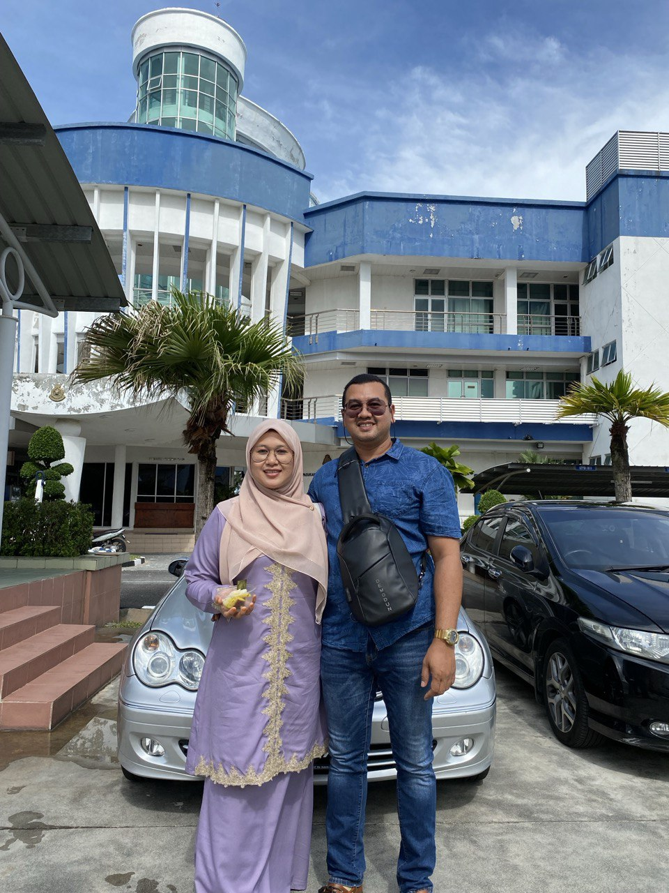

My Lovely FamilyMy Hero and Heroin

My father's name is Mohd Shahrul Rizwan Bin Kasim and he was born at Selama, Kedah. He was born in 14 June 1983. My dad is someone who has always led by example, and one moment that stands out is when I was struggling with a school project as a kid. Late at night, when I was ready to give up, he sat beside me, patiently helping and encouraging me, saying, "We finish what we start." That simple act of support and his belief in perseverance stuck with me, shaping how I approach challenges to this day. It’s moments like these that remind me of his quiet strength and love.
My SiblingsNurul Wahida binti Mohd Shahrul Rizwanis my first younger sister. She was born at same place like me in year 2005, 16 October. she 19 years old in this year. Now, she currently study at ILP Kepala Batas, Penang.Nur Anis Hanania binti Mohd Shahrul Rizwanis my second lil sister. She was born in year 2008, 2 November at Hospital Taiping, Perak. Now, she is school in SMK Selama, Kedah. Now she is the oldest and strictest sister at home when I and the second youngest sibling are not at home.Nursharu Salwa binti Mohd Shahrul Rizwanis my last younger sister. She 14 years old also was born at Hospital Taiping, Perak. She was born in 23 May 2010. She is the youngest sister and she is very gentle, but when she starts misbehaving, it feels like I just want to pinch her.Syaikhul Firas bin Mohd Shahrul Rizwanis my one and only little brother. He was born at Hospital Pulau Pinang in 4 Jun 2014. He 10 years old this year. Now, he is school in SK Sungai Taka, Kedah. He is the most spoiled and the most talkative. |